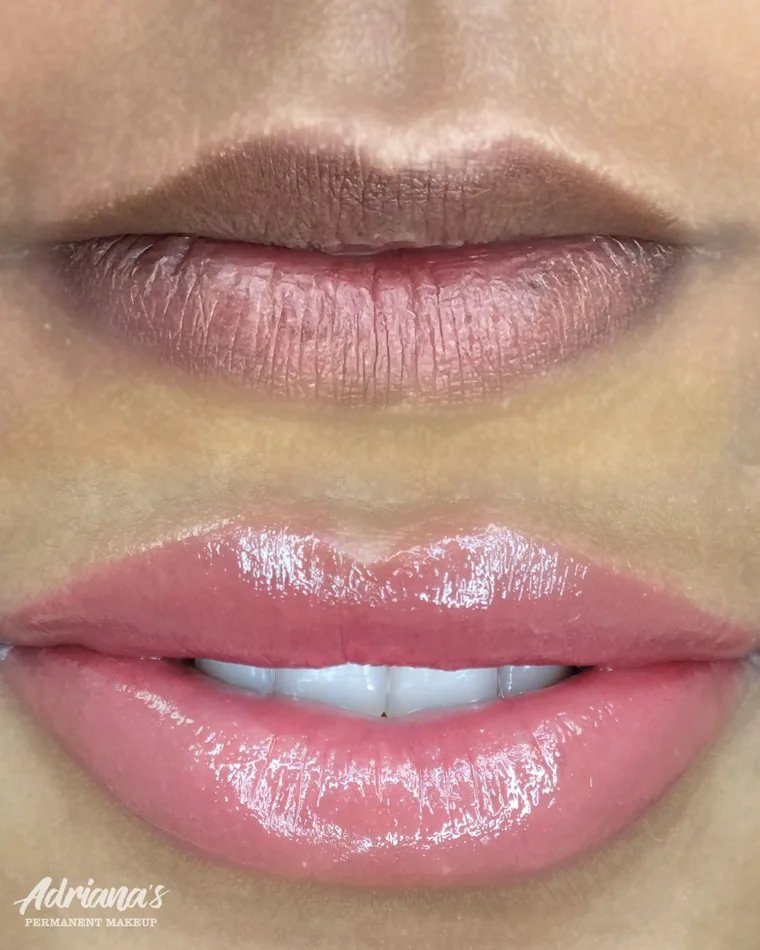

Dark Lip Neutralization in Wilmington, MA & Salem, NH
Dark Lip Neutralization uses advanced color correction to neutralize dark, cool, or uneven lip pigmentation and create a more balanced, natural-looking tone.
Starting at $550 USD
Book Now
Restore Balance and Beauty to Naturally Dark Lips
If you have lips with darker pigmentation, uneven tones, or areas of discoloration, Dark Lip Neutralization can help create a more balanced, even, and beautiful appearance. At Adriana Beauty Services – Permanent Makeup, we use advanced color correction techniques to neutralize cool or dark tones and prepare the lips for a healthier, more vibrant look.
For over 7 years, we have helped clients in Wilmington, MA and now Salem, NH achieve greater confidence through customized permanent makeup treatments.
What Is Dark Lip Neutralization?
Dark Lip Neutralization is a specialized permanent makeup procedure designed to correct dark, cool, or uneven pigmentation in the lips. Using carefully selected pigments, unwanted tones are neutralized before achieving a more balanced and natural lip color.
This treatment is commonly sought by clients who have naturally darker lips, hyperpigmentation, or uneven coloration caused by genetics, lifestyle factors, or previous cosmetic procedures.
The goal is not to lighten the lips unnaturally, but rather to create a more uniform and aesthetically pleasing tone.
Benefits of Dark Lip Neutralization
Dark Lip Neutralization offers several important benefits:
- Improved lip tone uniformity
- Reduction of dark or cool pigmentation
- Enhanced lip appearance
- Better foundation for future Lip Blush treatments
- Increased confidence
- Customized color correction
- Long-lasting results
- More youthful and vibrant-looking lips
Every treatment is tailored to the individual needs of the client.
Who Is a Good Candidate for Dark Lip Neutralization?
This treatment may be ideal for individuals who:
- Have naturally dark lips
- Experience uneven lip pigmentation
- Have cool, purple, gray, or brown undertones in the lips
- Want a more balanced lip color
- Are considering a future Lip Blush treatment
- Desire long-lasting cosmetic enhancement
A consultation is essential to evaluate your lip pigmentation and determine the most appropriate treatment plan.
How the Procedure Works
Dark Lip Neutralization requires a customized approach based on your natural lip color and desired outcome.
The process typically includes:
- Consultation and lip assessment
- Pigment analysis and color selection
- Application of topical numbing products
- Careful pigment implantation
- Post-treatment evaluation and aftercare instructions
Some clients may require multiple sessions to achieve optimal correction and color balance.
Healing and Aftercare
Following the procedure, clients may experience:
- Mild swelling
- Temporary color intensity
- Light peeling during healing
- Gradual improvement in lip tone
As the lips heal, the corrected color becomes more balanced and natural.
Following aftercare recommendations is important for proper healing and pigment retention.
How Many Sessions Are Needed?
The number of sessions varies depending on the degree of pigmentation and individual goals.
Many clients require:
- Two to four neutralization sessions
- Additional maintenance appointments as needed
- Follow-up Lip Blush treatment if desired
During your consultation, we will provide a personalized recommendation based on your specific needs.
Why Choose Adriana Beauty Services?
Dark Lip Neutralization requires advanced knowledge of color theory, pigment selection, and permanent makeup techniques.
Clients trust Adriana Beauty Services because we provide:
- More than 7 years of permanent makeup experience
- Personalized treatment plans
- Advanced color correction expertise
- High-quality pigments and equipment
- Natural-looking results
- Convenient locations in Wilmington, MA and Salem, NH
Our goal is to help every client achieve balanced, beautiful lips that enhance their natural features.
Frequently Asked Questions
The goal is to significantly improve and balance pigmentation. Results vary depending on the client's natural lip color and individual characteristics.
Many clients require multiple sessions to achieve optimal results. Your treatment plan will be customized during your consultation.
Most clients experience minimal discomfort thanks to the use of topical numbing products.
Yes. Many clients choose to undergo Lip Blush after completing the neutralization process.
Results can last several years depending on lifestyle, skin characteristics, and maintenance.
Schedule Your Dark Lip Neutralization Consultation
Ready to achieve a more balanced and even lip tone?
Book your consultation with Adriana Beauty Services – Permanent Makeup and learn how Dark Lip Neutralization can help you achieve naturally beautiful, confidence-boosting results.
Book Now